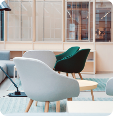
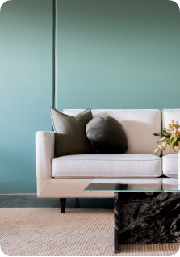

<section>
    <aside class="container-main">
        <aside class="flex-content">
<h3 class="flex-h3">METERIALS</h3>
<h1 class="flex-h1">Very Serious <br> Meterials For Making <br> Furniture</h1>
<h4 class="flex-h4">Because panto was very serious about designing furniture for our  environment, using a very expensive and famous capital but <br> at a  relatively low price</h4>
<a class="flex-btn" href="">More info <span class="material-icons-round card-icon">
    trending_flat
    </span></a>      
</aside>
<aside class="gallery">
    <aside class="gallery-order">
        
        
    </aside>
   <aside class="last-img">
    
   </aside>
    
</aside>
    </aside>
</section>
